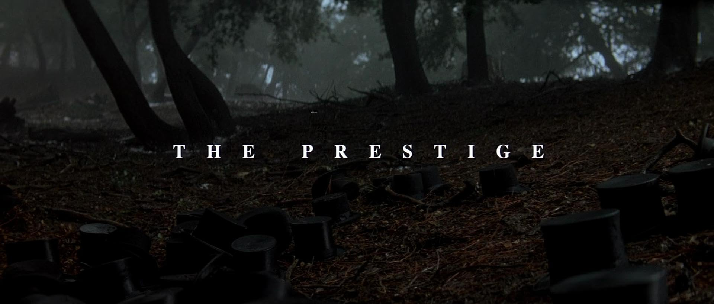
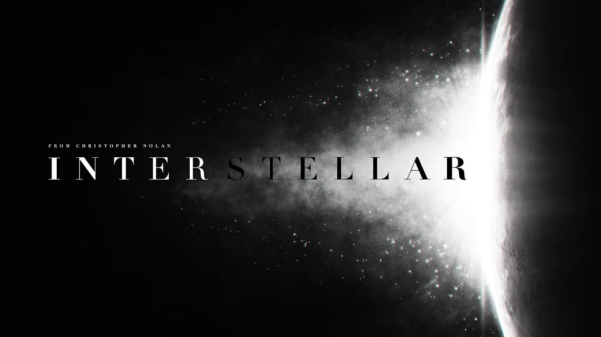
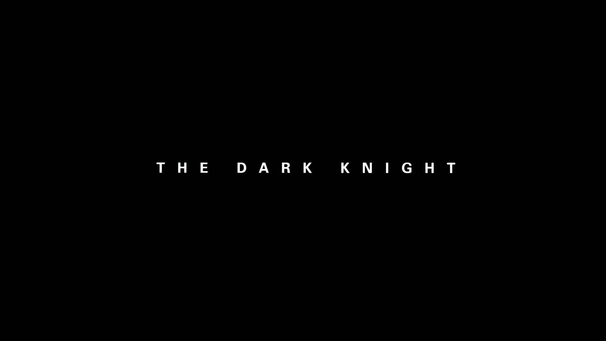

Best Movies According To Sameer
My top 3 of All-Time
The Prestige

Two friends and fellow magicians become bitter enemies after a sudden tragedy.
Interstellar

Joseph Cooper, is tasked to pilot a spacecraft, along with a team of researchers, to find a new planet for humans
The Dark Knight

People of Gotham, Batman, James Gordon and Harvey Dent must work together to put an end to the madness.